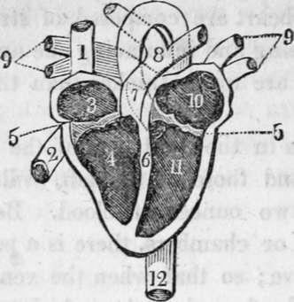
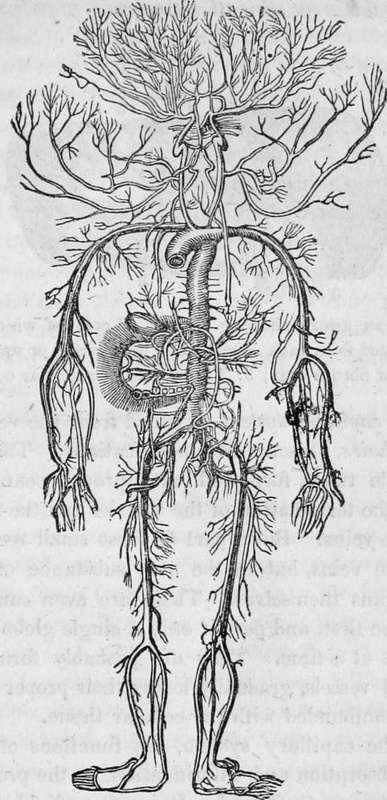
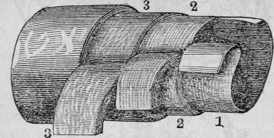

The Circulation Of The Blood. Part 2
Description
This section is from the book "Human Physiology For The Use Of Elementary Schools", by Charles Alfred Lee. Also available from Amazon: Human Physiology, for the Use of Elementary Schools.
The Circulation Of The Blood. Part 2
11. The arteries are the vessels into which the blood is immediately propelled by the action of the heart, and which distribute it to all the parts of the body. The pulmonary artery or the artery of the right side of the heart, circulates dark coloured or venous blood through the lungs, where by exposure to the air, it becomes a bright scarlet. This is returned into the left auricle, which forces it into the left ventricle, whence it is sent through the aorta to every part of the system.
View of the heart with its several chambers exposed and the vessels in connection with them. 1. The superior vena cava. 2. The inferior vena cava. 3. The chamber called the auricle. 4. The right ventricle. 5. The line marking the passage between the two chambers, and the points of attachment of one margin of the valve. 6. The septum between the two ventricles. 7. The pulmonary artery, arising from the right ventricle, and dividing at 8 into right and left, for the corresponding lungs. 9. The four pulmonary veins, bringing the blood from the lungs into 10, the left auricle. 11. The left ventricle. 12. The aorta, arising from the left ventricle, and passing down behind the heart, to distribute blood to every part of the system. Thus the blood moves in a double circle, one from the heart to the body, and from the body back to the heart, called the systemic circle; the other, from the heart to the lung, and from the lung back to the heart, called the pulmonic circle.
12. The arteries are very strong and elastic, of a yellowish white colour, and have three coats, the outer one of which is called cellular, the middle, the fibrous coat, and the internal, serous. It is very important that arteries should be elastic and capable of stretching, because, if they were not, every time a limb was broken, the artery would be ruptured, and the person bleed to death. (See Fig. 3.)
13. The veins which return the blood to the heart constitute two systems like the arteries; the one brings all the dark coloured blood from the head, trunk and limbs, and internal organs, to the right side of the heart, into which it opens by the two great trunks, called the upper and lower vena cava. The other conveys the scarlet coloured or arterial blood, from the lungs to the left auricle, into which it issues by four large trunks, called pulmonary veins. The veins are strong and flexible, but not elastic like arteries. They are furnished with little valves placed at short distances from each other, so as to prevent the blood from flowing back again. Like the arteries, they are supplied with nerves from the great sympathetic nerve.
The Arterial system.
Portion of an artery, showing the several coats of which it is composed, separated from each other. 1. The internal or serous coat; 2. The middle or fibrous coat; 3. The external or cellular coat.
14. The capillary system, so called from the vessels being small, like hairs, presents two modifications. The first consists of little tubes, furnished with proper coats or walls, which are the termination of the arteries and the commencement of the veins. But a part of these small vessels do not terminate in veins, but in the very substance of the flesh, and the organs themselves. These are even smaller channels than the first, and permit only a single globule of blood to pass out at a time. They are probably formed by the fine arterial vessels, gradually losing their proper coats, and becoming confounded with the cellular tissue.
15. In the capillary system, the functions of secretion, nutrition, absorption and calorification, or the production of animal heat, are performed. It is often divided into two sections, the general and the pulmonary. The first has already been described. The other exists only in the lungs, and connects the pulmonary arteries and veins. In this the blood is changed from venous to arterial.
16. The account which has been given of the circulation applies to the human species, mammalia and birds. Reptiles have but one heart, containing one ventricle and one or two auricles, which receive arterial blood from the lungs, and venous blood from the body, and in its cavity both are mixed together. The main artery going from the heart, divides into two branches, one of which goes to the lungs, the other is distributed throughout the body. In some of the other classes of animals, such as worms, there is no heart, and the circulation consists in the passage of the blood from the surface, where are seated the organs of respiration, to all parts of the animal and back again, which is performed exclusively by vessels. Fishes have a single heart, designed only to circulate venous blood, which it conveys to the gills, or lungs; and from thence it is carried to every part of the body, by an artery which rises from the gills themselves. Shell fish have also a single heart, but this only circulates arterial blood.
17. The following facts were brought forward by Harvey to prove the circulation of the blood. If the chest of a cold blooded animal be opened, the heart will be seen dilating and contracting. The valves are so situated throughout the circulating system, as to promote the circulation. Between the auricles and ventricles they are so placed as to allow the blood to pass freely from the former into the latter, and to prevent its return. The valves placed at the orifice of the arteries, permits the blood to enter them from the ventricles, but prevents it getting back into the heart. The valves in the veins allow the blood to go towards the heart, but prevent it from going in the other direction.
18. In bleeding, a bandage or ligature is placed round the arm, above the point where the arm is to be opened. The blood, in its return toward the heart, is interrupted, but the artery which carries the blood to it is not compressed, because it lies deeper. Sometimes, however, the ligature is so tight that the blood will not flow till it has been loosened. If the vein be opened below the ligature it will bleed freely, but no blood is obtained if it be opened above.
Continue to:
- prev: Chapter XIX. The Circulation Of The Blood
- Table of Contents
- next: The Circulation Of The Blood. Part 3
Tags
humans, anatomy, skeleton, bones, physiology, organs, nerves, brain